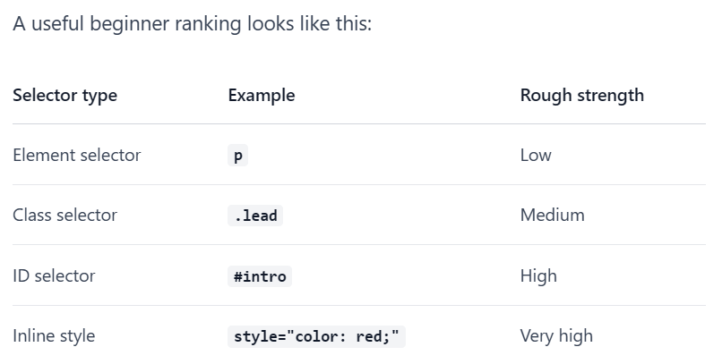
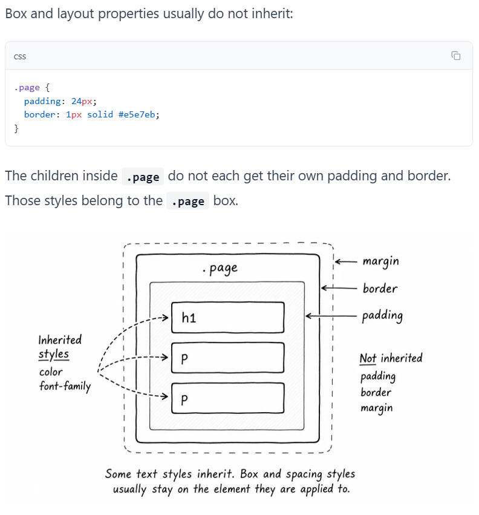
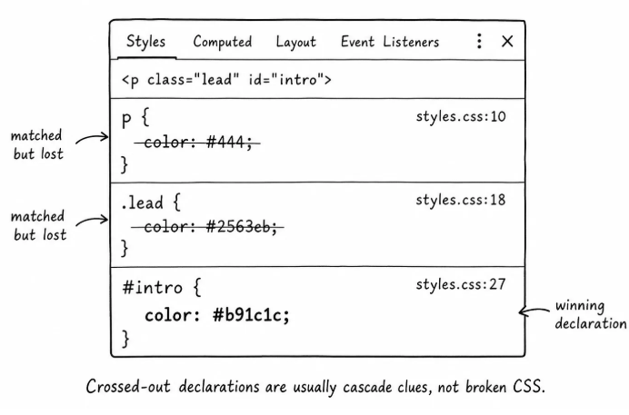

Cascade practice
This paragraph matches several rules.
This paragraph helps us compare inherited and direct styles.
Specificity Ranking:

Box and layout properties usually do not inherit:

Crossed-out styles are clues
When a declaration loses, DevTools often shows it crossed out.
Inspect the lead paragraph in the browser. You may see the p color and .lead color crossed out, while the #intro color is active.
That does not mean the p selector failed. It matched, but its color declaration lost to a more specific rule.
This distinction matters when you debug:
- If a rule does not appear in DevTools, the selector probably did not match.
- If a declaration appears crossed out, the selector matched, but another declaration won.
